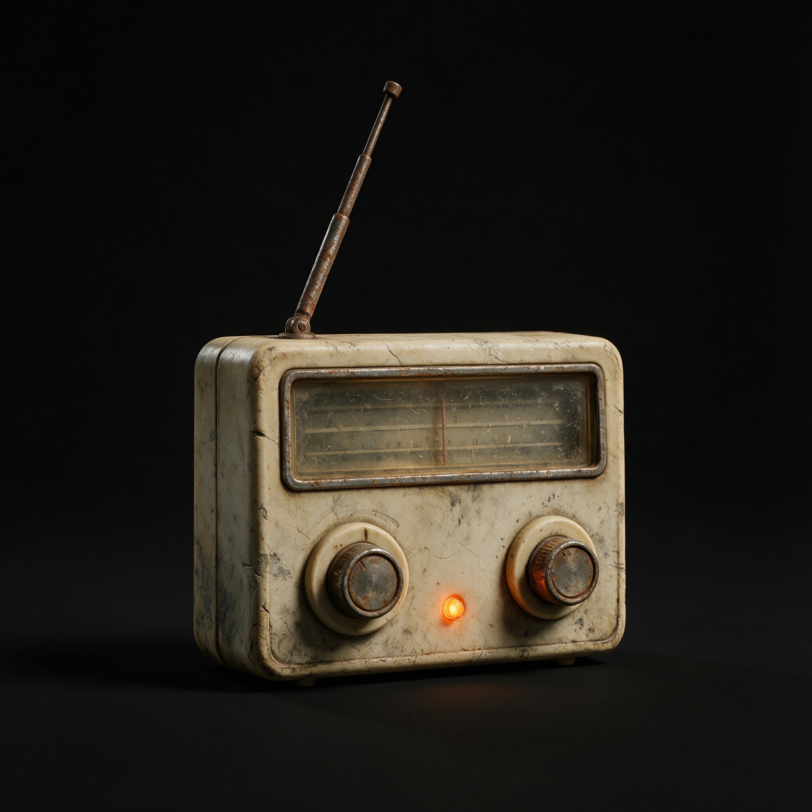
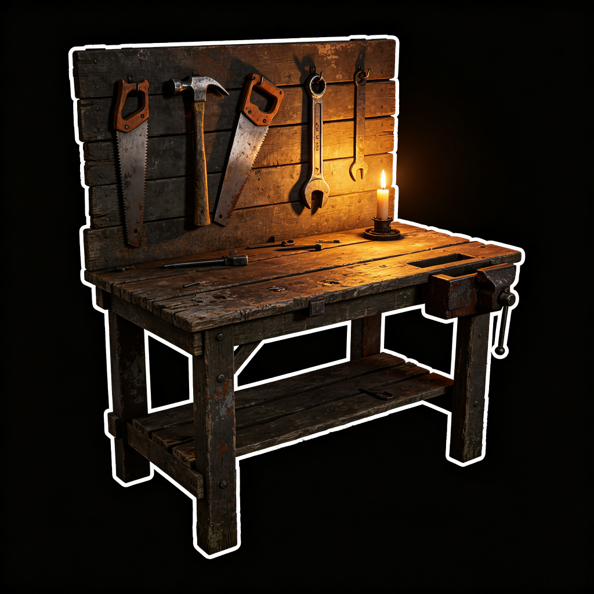
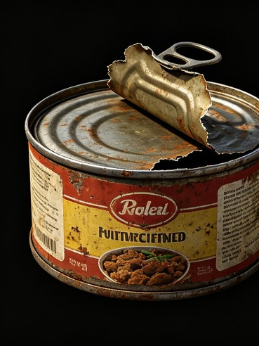
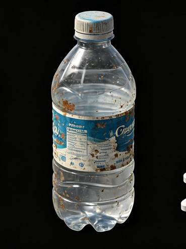
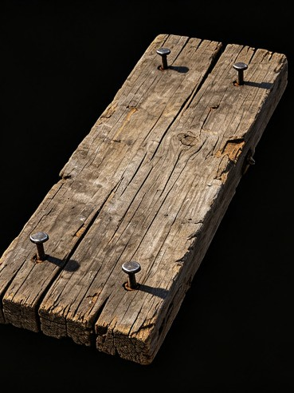
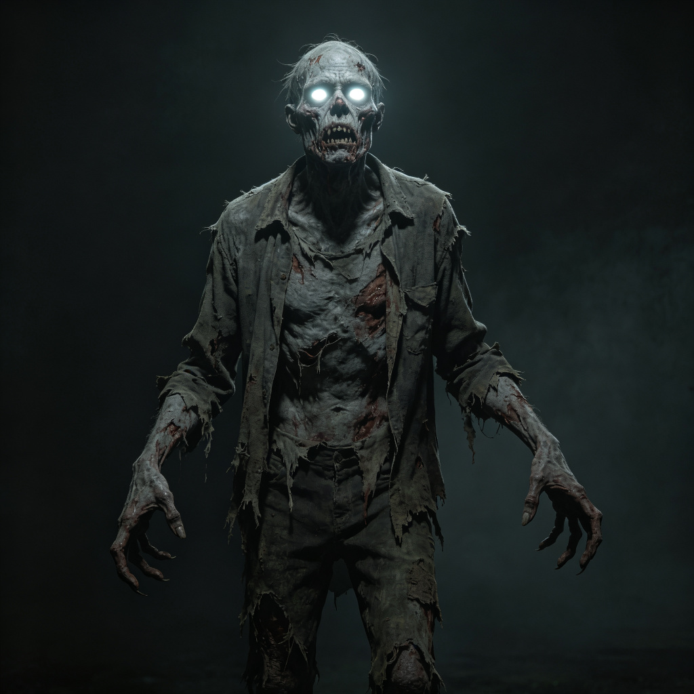

选 择 角 色
选择你的生存者，不同的职业背景决定了不同的生存特质
末日余生
LAST SURVIVORS
资源加载中 0%
🔊 点击任意位置开启声音
💡 全屏游玩效果更佳，按 F11 或点击右上角全屏按钮
初次打开请等一小会进行资源加载，感谢您的游玩！
初次打开请等一小会进行资源加载，感谢您的游玩！
避难所

收音机

制作台
状态
♥ 生命100
⚡ 体力100
🍖 饱食100
💧 口渴100
◈ 精神100
☣ 感染0%
第 1 / 30 天
06:00
白天
☀ 晴
行动点: 4/4
物资

0!
0!0!

0!0!
遭遇战斗

普通丧尸
♥ 生命 100
⚡ 体力 100
🍖 饱食 100
💧 口渴 100
☣ 感染 0%
制作台
背包
装备武器
无
生存日记
游戏结束
第 1 天
城市地图
准备阶段
选择一个地点
点击地图上的图标查看地点详情。
技能天赋
可用技能点：0
午夜降临 · 危险警告
成就记录
已解锁：0 / 12
老式短波收音机
80
90
100
110
120
MHz
87.5 MHz
已关机